Training wizards to save The Spiral!
In the video game Wizard101, players can battle enemies in a 2-sided card game. Cards can deal damage, heal, enhance future cards plays, and more. The player's team wins when all enemies have 0 health, and vise versa. Associated with each player and card is a "school" of magic: Life, Death, Fire, Ice, Storm, Myth, and Balance.
In this project, I set out to create competitive agents. I recreated the card game in python so I could simulate games and allow for RL training. I also made a website to demo the game. The link is at the top.
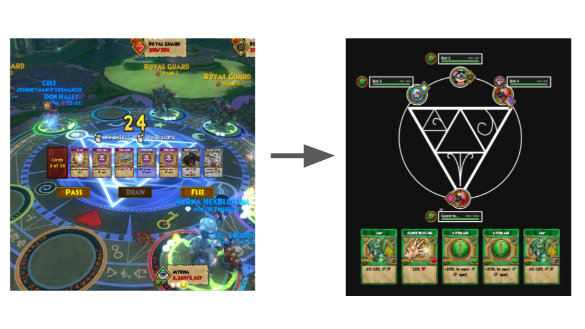
I divided the agent into 7 sub-agents, 1 agent per school of magic. I chose this because each school of magic has distinct strengths and weaknesses which would conflict if trained under the same model. All were trained in 1v1 combat. A transformer architecture was used which took in embedded tokens of game state, player state, and card state. The model has several heads for the various action types, which output logits for all possible actions. After masking out prohibited actions, the highest logit is chosen as the player action.
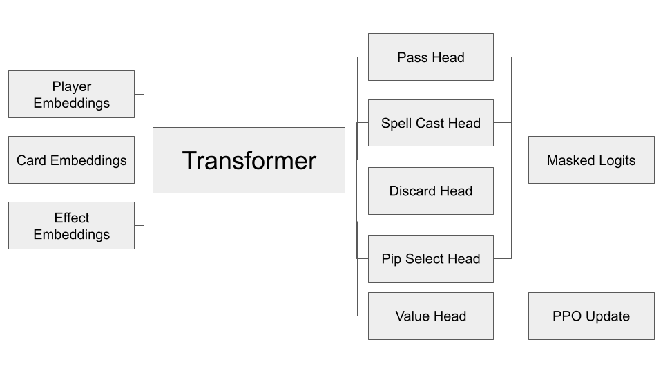
Below shows how player actions are masked. First, the playability of a card is checked, then which players the card can be used on.
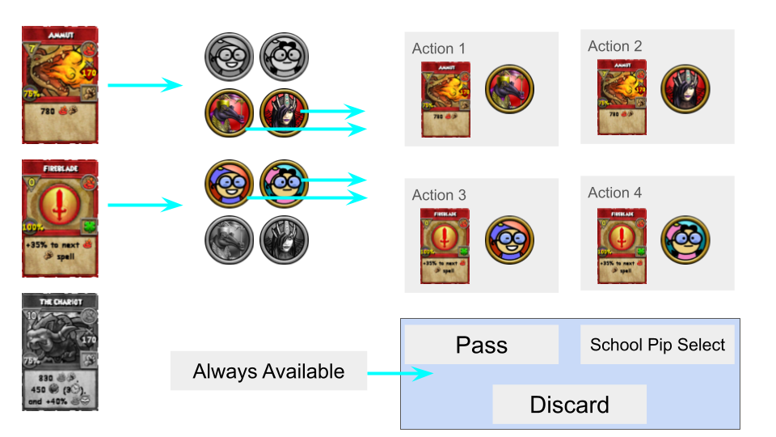
Below shows some of the information I used in the token embeddings.
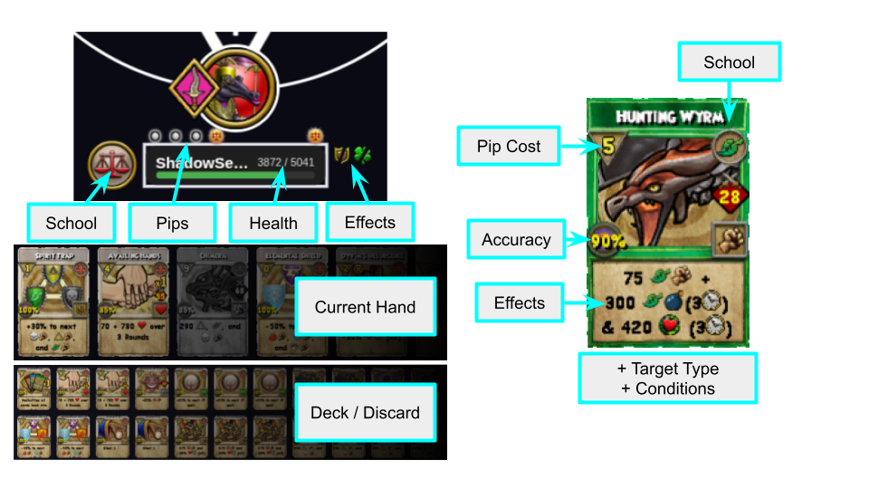
| Token Type | Description |
|---|---|
| Card Token | Cost, school, conditions, effects, place (hand/deck/expended) |
| Player Token | Health, pips, school |
| Game Token | Round, player's pip select |
| Hanging Effect Token | Owner, type (charm/curse/jinx/ward), amount, aspect, etc. |
Here is an example of the layout of a card token. Specifically, the Tribunal Oni card had the longest card description (and from which I derived the token size from).
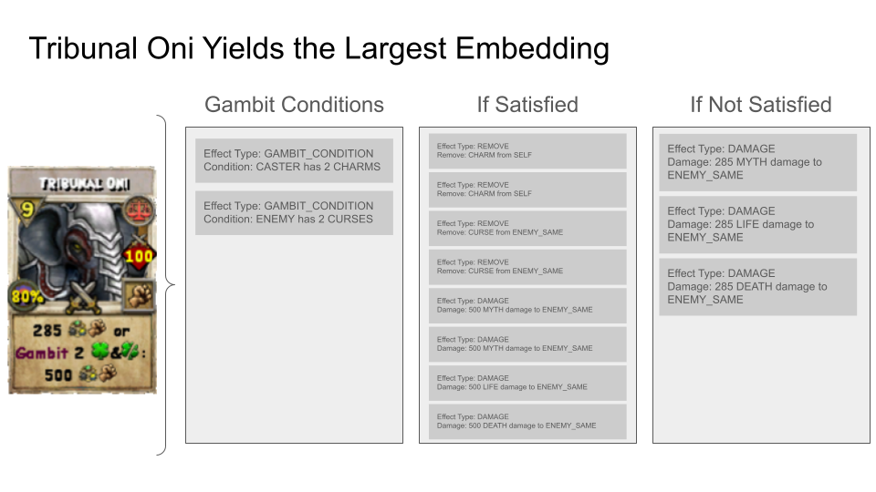
I chose to train the model with PPO because of my access to computationally cheap simulations of games and because actor-critic methods have been historically used for game playing (eg. AlphaStar, AlphaGo, AlphaZero). A value head on the transformer was used for the critic. GAE was used for advantages. Rewards were as follows:
| Event | Reward |
|---|---|
| Player Wins | 1 |
| Player Loses | -1 |
| Player Passes Their Turn | -0.0005 |
| Enemy takes damage | 0.05 * damage amount / enemy's max health |
| Player misses out on receiving a pip because they have too many (max of 7 pips allowed) | -0.05 |
I also included an evolutionary search for better deck states, but I restricted the search to only cards within an agent's school.
Because the goal was to get a better-than-guessing agent, the opponent during training was always a opponent with a strong deck configuration that randomly chose actions.
I divided training into 2 distinct phases: the first phase locks the agent's deck to a pre-defined configuration and is intended to produce a competent agent; the second phase allows decks to evolve while the agent continues to learn, hopefully leading to discovery of new strategies.
In phase 1, the agent is faced against increasingly stronger opponents. At each new opponent, the agent is required to reach a certain win rate in order to advance to the next opponent. To prevent the agent from overfitting to the pre-configured deck, every game a fraction of the deck cards were replaced by random cards from the agent's school. By the end of phase 1, the opponent is facing an opponent at the same level (level dictates the players stats, such as health, damage bonus, etc).
In phase 2, evolutionary deck building is added, and the agent continues competing against a same-level opponent.
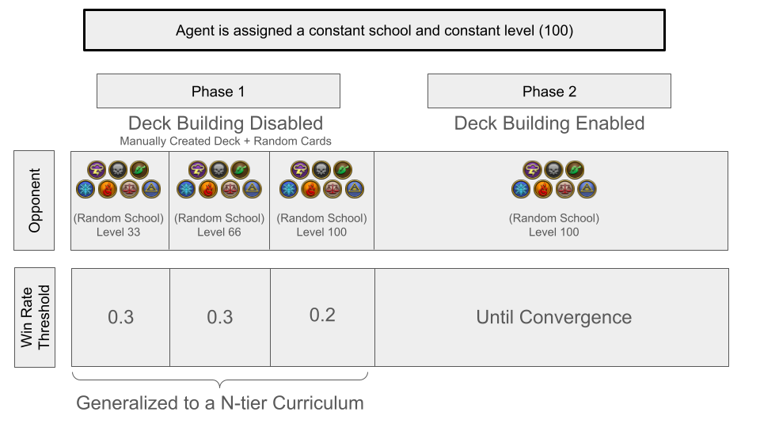
First, there is a large disparity in performance between schools when randomly choosing actions. Presented below are the win rates of 1v1s where both players randomly choose cards. (Each school has a predefined deck configuration which allows it to be relatively competitive).
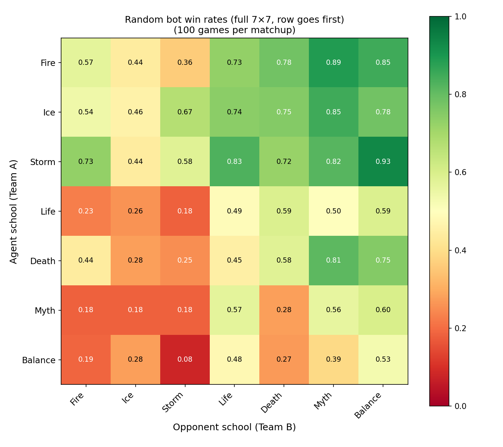
Here are the training win-rates of all 7 schools. Several things to note: all schools passed their opponent win-rate thresholds immediately after the minimum iteration amount, so I could represent each opponent transitation as vertical lines. Secondly, I employed early stopping which would stop training when average performance did not improve over the last N iterations, so some schools did not make it to the very end of training. For all schools, the last iterations were not the best performing ones (though Fire got close).
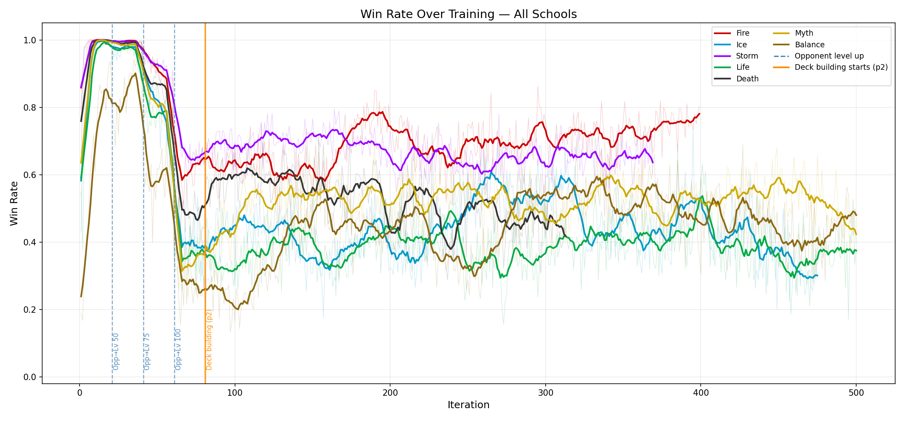
After training, here are the win rates of the agent when playing against a random-action opponent.
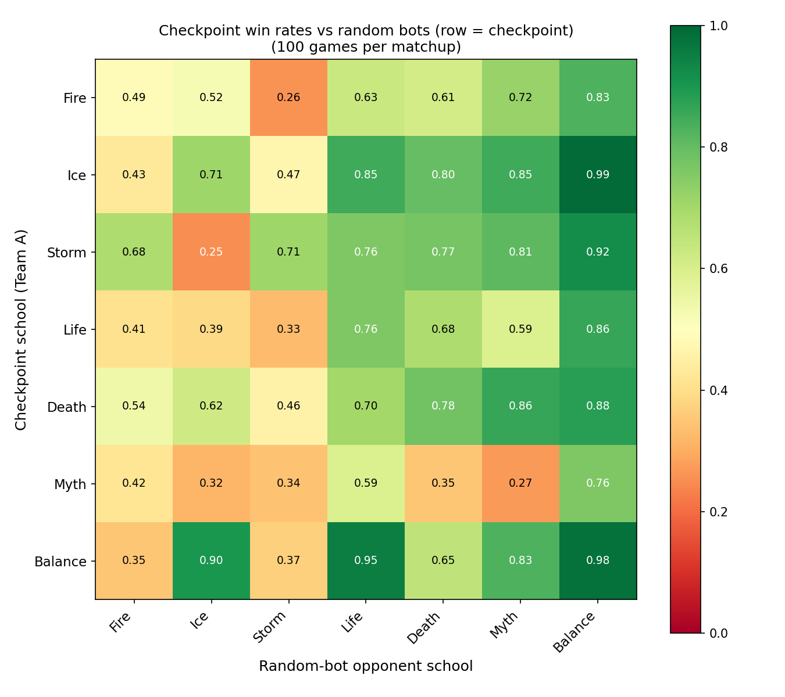
These results show significant improvement compared to the random-action player. Below shows the difference in win-rates between a random-action player and an AI agent:
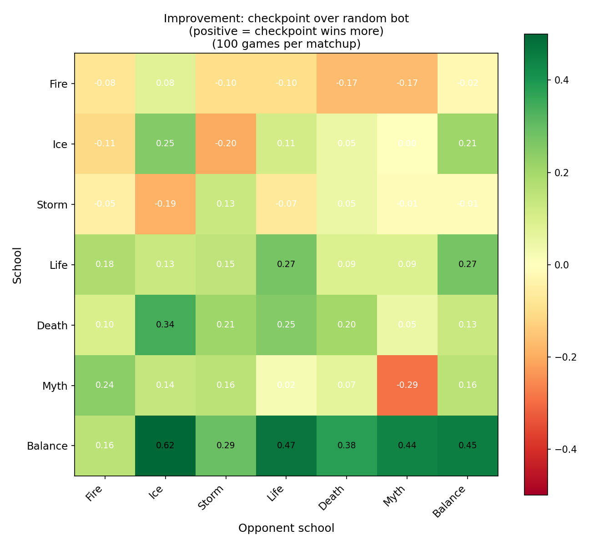
Here are the win rates of AI agents playing against AI agents.
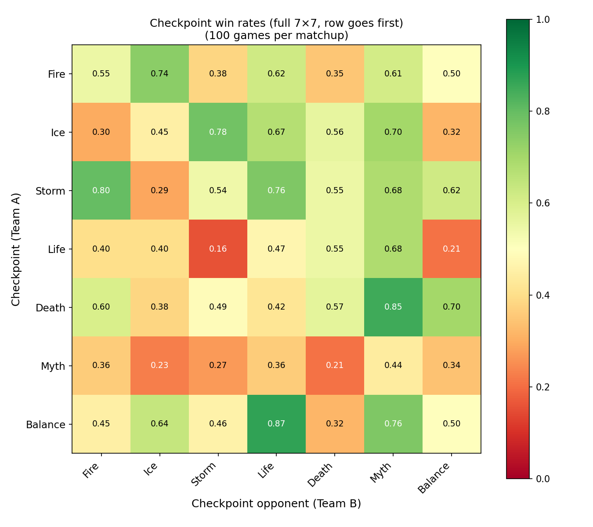
Compared to the random-action player v. random-action oppponent, these win rates are much more even, demonstrating that the agent was able to adapt and learn an effective playstyle for their respective school, allowing for better-than-random play.
Here are the win rates of the AI agent at the end of phase 1 (before deck building was enabled)
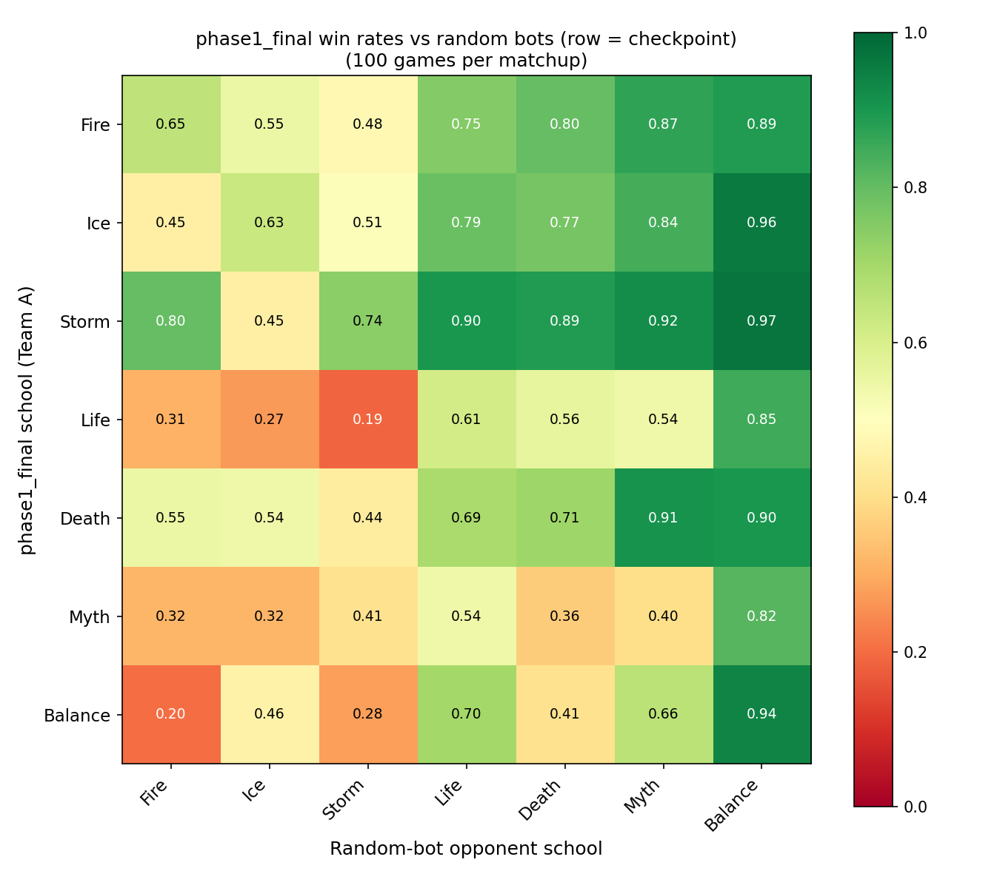
Here, the results show that deck building led to slightly better win rates for Myth, Life, Balance, Death, and Ice, but worse win rates for Fire and Storm. I believe this is because for damage-heavy schools like Fire and Storm, the agent overfitted to a basic strategy during phase 1, and thus could not adapt to new card combinations. To contrast this, schools like Balance and Life experienced harder struggles in phase 1 that necessitated more complex strategies which made them more apt for new cards in the deck building phase.
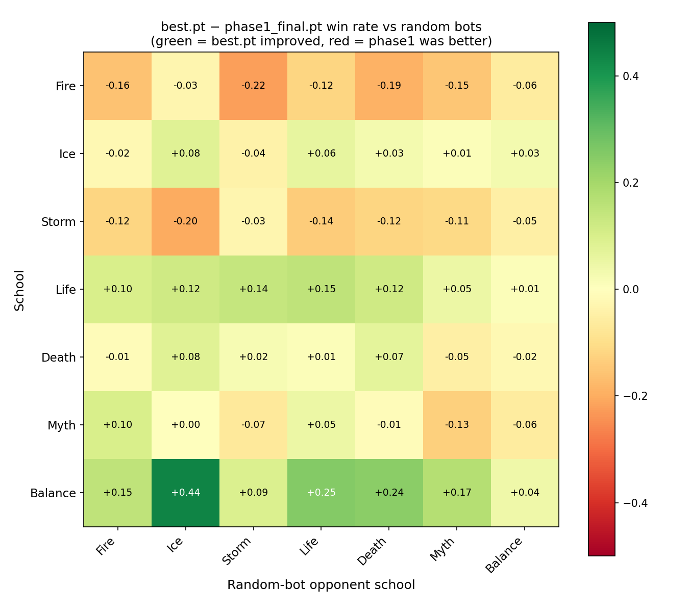
I experimented with many different ideas during development before reaching a successful blueprint. Here, I list some of these ideas.
Before resorting to evolutionary deck building, I tried training a transformer actor critic just like the agent but for deck building. The deck builder used the reward signals received by the agent.
I tried different strategies of training the deck builder. First, I naively tried to train both the agent and the deck builder immediately, but the produced decks were too weak for the agent to achieve significant rewards to promote learning. I then incorporated a behavior cloning regularizer that would push the deck builder towards the pre-configured deck, but this also led to weak reward signals (from always losing). Finally, I implemented multi-stage training processes where the agent would first learn using a locked pre-configured deck, and then deck building would be enabled. However, the deck builder did not synergize with the agent and both fell into poor performance. A final attempt was to use BC Annealling to wean the agent off of the pre-configured deck, but this also did not lead to good performance. Below is a diagram of how I designed the transformer deck builder.
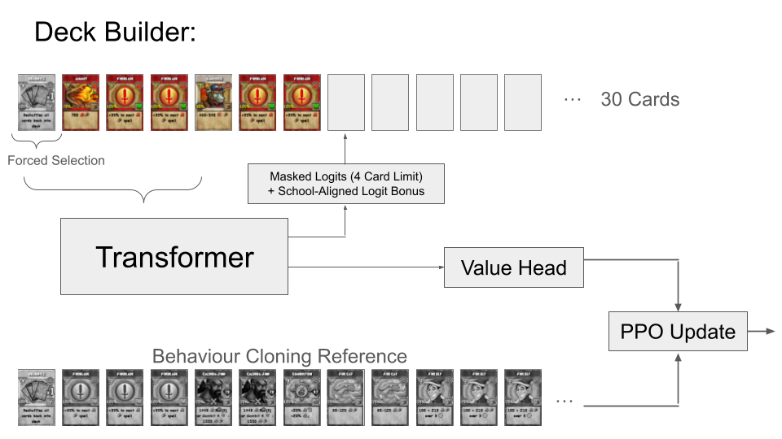
In the real Wizard101 game, strong decks usually include spells from different schools, not just the player's school. While cards from different schools don't benefit from cheaper costs or player stats, they can lead to extremely powerful strategies when combined with in-school cards.
I tried various techniques to allow deck building to incorporate spells from other schools: for the transformer deck builder, I allowed all cards to be available but provided a logit bonus to in-school cards; in the evolutionary deck builder, I included a small chance that a deck mutates to a card outside of the player's school.
Unfortunately, the increased state space was too large for effective learning to take place. Decks would devolve into random assortments of cards across schools that were weak. The agent would resultingly lose constantly, which led to poor learning, which would then cycle back to the deck builder.
Here are a couple ideas and to-do's which I can pursue to further polish up this project: